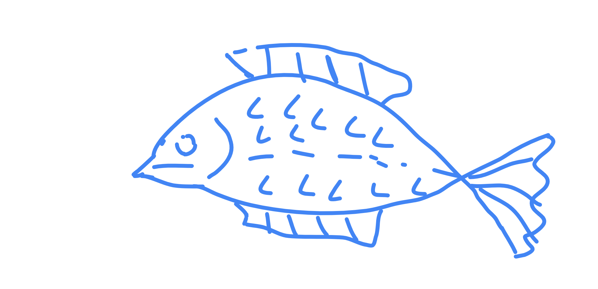

About Me

Hi! I am Akomolafe Ayoyinka, an aspiring DevOps engineer with a strong passion for cloud computing, automation, and infrastructure management. My journey in DevOps is fueled by my curiosity and desire to bridge the gap between development and operations.
Currently, I am expanding my expertise in continuous integration and continuous deployment (CI/CD), infrastructure as code (IaC), and cloud services, primarily on AWS.
My Goals
- Become a proficient cloud engineer specializing in AWS.
- Master configuration management tools like Ansible, Chef, and Puppet.
- Develop expertise in containerization and orchestration using Docker and Kubernetes.
- Implement DevOps best practices, including CI/CD, observability, and automation.
- Obtain industry-recognized certifications such as AWS Certified DevOps Engineer and Certified Kubernetes Administrator.
Learning Journey
My DevOps learning journey started with foundational Linux and scripting skills. I have since progressed into:
- Cloud computing fundamentals, focusing on AWS services like EC2, S3, IAM, and Lambda.
- Infrastructure as Code (IaC) using Terraform and CloudFormation.
- CI/CD pipelines with Jenkins, GitHub Actions, and GitLab CI.
- Monitoring and logging with Prometheus, Grafana, and ELK Stack.
- Security best practices, identity management, and compliance in cloud environments.
I am currently enrolled in a summer boot camp at TechNgineers.dev, where I work on real-world projects, collaborate with peers, and gain hands-on experience in DevOps tools and methodologies.
Projects
Here are some projects I have worked on:
- Automated Infrastructure Deployment: Built a fully automated AWS infrastructure using Terraform and Ansible.
- CI/CD Pipeline Implementation: Created a Jenkins pipeline for a web application, enabling continuous integration and deployment.
- Dockerized Web Application: Developed a containerized microservice architecture using Docker and Kubernetes.
- Logging and Monitoring: Set up a monitoring solution with Prometheus and Grafana for real-time application insights.
Future Plans
After completing this boot camp, I plan to:
- Work on real-world cloud infrastructure projects to gain industry experience.
- Contribute to open-source DevOps tools and platforms.
- Pursue certifications such as AWS Certified Solutions Architect and Kubernetes Administrator.
- Continue learning and keeping up with industry trends to stay ahead in the DevOps field.